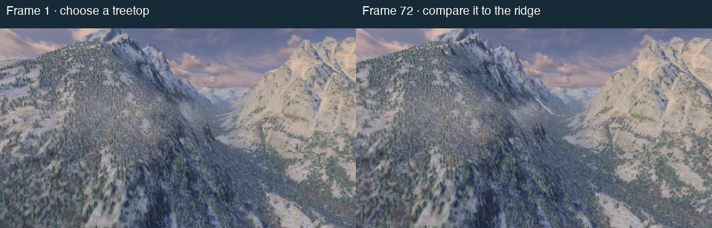
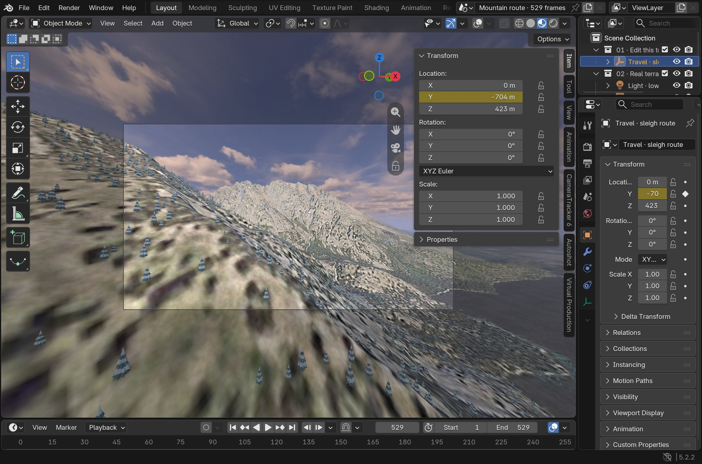
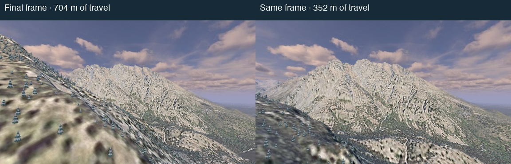
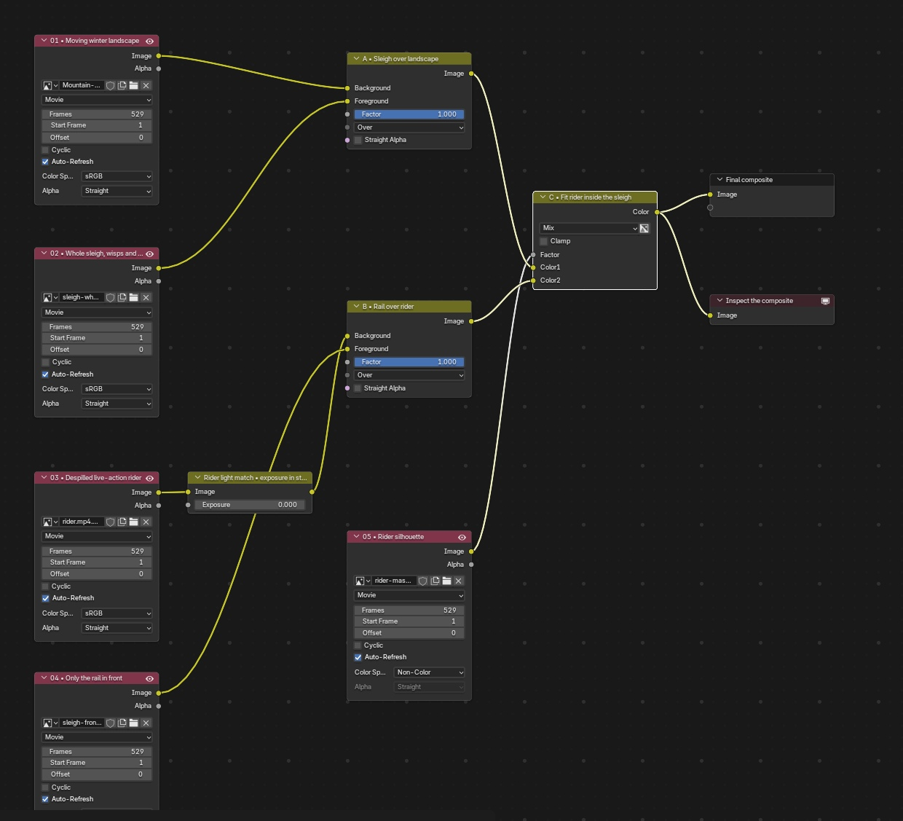

Put the filmed rider in a sleigh and fly through a winter valley. Build the short tracking and weather exercises first, then practise a moving mask and revise the 529-frame composite.
Allow two 70-minute classes for the guided route after the short tracking lesson. The full camera, complete rider matte and rendered mountain journey are supplied. You will fit and test a seat, animate a new mask, change a parallax move, revise the composite and export a film. Building the land from its height map and tracing an entire performance are extensions. The full-size render can run after class. The geographic survey and automatic full-take matte are supplied production inputs.
Tracking recovers how the phone moved around the seated person. Flight adds a separate journey through the landscape.
Explain your decisionI trust the seat around frame ___ because ___.
IN SHORTTracking recovers how the phone moved around the seated person. Flight adds a separate journey through the landscape.
READ ALOUD
TodayWork from the camera and the matte before adding atmosphere.
DOCUMENT: Extract Full-Flight-Files.zip completely. Open Full-Take-Camera.blend from the extracted folder. Keep room-full.mp4 beside it. SELECT: Compare what stays attached and what passes the camera. TOOLS / ROUTE: Blender 5.2 · 3D Viewport → View → Cameras → Active Camera. The timeline frame box lets you visit an exact frame.
Watch the sleigh preview once. On the next viewing, follow the rider’s hip against the seat. On a third, follow a nearby treetop against a distant summit. Which two features should stay together? Which should separate?
Save As My-Camera-Check.blend in the extracted folder. Jump to frames 121, 165 and 210 in camera view. Find the wire box on the real seat. Compare a corner on each frame. Frame 121 here is frame 1 of the short tracking exercise.
If this is your first solve, do track a corner, then solve the 90-frame excerpt and orient the floor. The starter supplies 170 room tracks; you add a track and run the solver yourself. In your own shot distribute fixed details near, midway and far. Keep at least eight shared tracks on your two solve keyframes; track additional features as old ones leave.
Return to the full camera file and compare frames 335, 420 and 490. The later camera sees another side of the prop. Use a stationary box edge while it is visible. Once it leaves view, judge continuity from fixed room details. The prepared full camera extends the measured excerpt across the take.
STEP CHECKLIST
GLOSSARY
Camera solve: An estimate of camera position and rotation computed from image measurements.
Stationary features on the actual room plate. Pick a floor or wall feature away from the moving fabric.
WHYTracking recovers how the phone moved around the seated person. Flight adds a separate journey through the landscape.
CHECKThe wire box follows the chair while the wall moves in the view. You can point out a seat check the tracker did not use.
FIXA wire box that sticks on one frame and drifts on the next can indicate a depth error. Recheck camera and box depth before changing the rider’s size.
WORKED EXAMPLE · DIFFERENT OBJECTFor a toy train filmed from the platform, track the platform first. Animate the train separately.
STRETCH (AFTER THE CHECK PASSES)Name the last frame where you can still defend a seat measurement from the original picture.
02
Repair a sleeve when the green backing ends
Keying selects a colour. Rotoscoping follows a shape. You need a shape when a similarly coloured object crosses the actor or the backdrop runs out.
Explain your decisionMy repair improved frame ___; I checked between keys at ___.
IN SHORTKeying selects a colour. Rotoscoping follows a shape. You need a shape when a similarly coloured object crosses the actor or the backdrop runs out.
READ ALOUD
TodayWork from the camera and the matte before adding atmosphere.
DOCUMENT: Open Sleeve-Repair.blend. Save As My-Sleeve.blend in the same folder. Its 13 frames correspond to full frames 420–432. The practice matte has a deliberate bite cut from the screen-left sleeve. SELECT: Keep a moving edge attached to the photographed coat. TOOLS / ROUTE: Movie Clip Editor → Mask mode · Mask → Animation → Insert Shape Key. In the compositor, “Repair shape” selects the mask used in the render.
At frame 1 locate the patch along the outer edge of the screen-left sleeve. Render one frame with F12 to see the coat against blue. The initial Your sleeve patch has a shape key at frame 1. Press F11 to return to the editor if the render window is open. Before editing, visit frame 13, render it and save before-13.png. Compare that same frame after your repair.
Go to frame 13. Zoom in on the elbow. With the pointer over the Clip Editor, press A to select the mask points, then G to move their group along with the sleeve. Deselect and use G on individual points to follow the cloth outline. Keep the inside edge comfortably inside the fabric. Use Mask → Animation → Insert Shape Key.
At frame 7 fit the outline again and insert a shape key. Scrub to 4 and 10, where Blender interpolates. Render 13 again and compare with before-13.png. For a reference, in the Compositing workspace switch the Repair shape Mask node to Worked sleeve patch; switch back before saving.
For your own edge, choose New in the Mask selector on a copy of the clip. Ctrl-click points around a small region, then use Mask → Toggle Cyclic to close an open outline. Insert the first shape key before changing frames. In the compositor search for Mask and Math. Set Math to Maximum; connect the base matte and the repair mask to its two inputs. For an unwanted background patch, subtract a removal mask and clamp the result. Inspect the result over dark and light backgrounds.
Try a harder edge on the full take
Open Late-head-mask-practice.blend with room-full.mp4 beside it. Scrub full frames 420, 428 and 436. Compare the endpoint interpolation with a corrected middle key at the cheek. Toggle the mask overlay and compare to the actual hairline. Use the same process for a shorter segment on your own clip.
A middle shape key removes the green sliver at the cheek.
STEP CHECKLIST
GLOSSARY
Matte: A coverage image: white keeps a pixel, black removes it, and grey preserves a partial edge.
Frame 13 before and after the moving sleeve repair. Both views use the same photograph and inspection background.Actual Blender Mask editor. Select the sleeve outline in the Movie Clip Editor; the shape key belongs to the mask layer.
WHYKeying selects a colour. Rotoscoping follows a shape. You need a shape when a similarly coloured object crosses the actor or the backdrop runs out.
CHECKAt frame 13 the outer sleeve is continuous; at 4 and 10 the patch picks up fabric without bringing in the room.
FIXA mask that stays behind usually has just one shape key. Check that the active Clip Editor mask and the compositor Mask node name the same mask. Add a correction at the first slipping frame.
WORKED EXAMPLE · DIFFERENT OBJECTOn a waving hand, trace the fingertips where direction changes. Check the in-between frame before adding more points.
STRETCH (AFTER THE CHECK PASSES)Apply the same process to a fresh 12-frame area of the glasses or hair and explain which edge is harder.
03
Seat the rider and restore the front rail
A floating performer can come from an incorrect contact point, an undersized body or a rail composited behind the lap. Diagnose these separately.
Explain your decisionAt frame ___ the ___ passes in front of ___.
IN SHORTA floating performer can come from an incorrect contact point, an undersized body or a rail composited behind the lap. Diagnose these separately.
READ ALOUD
TodayWork from the camera and the matte before adding atmosphere.
DOCUMENT: Open the 90-frame vehicle placement exercise for the hands-on append and fit. Use Sleigh-Geometry.blend in the full kit to inspect the extended camera path. SELECT: Use contact, proportion and overlap to judge the fit from two angles. TOOLS / ROUTE: 3D Viewport in camera view · Outliner · Transform sidebar · Compositing workspace.
In your practice file append Flight-Models.blend → Collection → SLEIGH | vehicle. Keep Instance Collections off. Select the seat pivot and put it on the solved seat anchor as shown in step 6. Rotate and scale the assembly around that pivot.
For the X-Fighter route, import the class copy of X-Fighter.obj with its original UVs and Maps folder, then follow How to build the Star Pack shot. Check a side view and the front view together. On the example, enlarging the pilot and matte together by 68% made the shoulders fill the seat while keeping clearance under the canopy.
For an open sleigh, look for the weight of the rider on the cushion. The backrest belongs behind the torso. The near rail must cover the lap where they overlap. Watch frames 121, 300 and 420; parts change sides in the picture as the camera comes around.
Open Sleigh-Flight.blend and Save As My-Sleigh.blend in the same folder. In Compositing follow the whole sleigh over the landscape; then find the branch that puts the nearer geometry over the photographed rider. Use the render-pass exercise to build and reconnect layers yourself.
STEP CHECKLIST
GLOSSARY
Occlusion: A nearer surface hiding part of a farther one.
Two identical camera angles before and after the cockpit fit. Use the seat back, rider’s shoulders and top rail as references.
WHYA floating performer can come from an incorrect contact point, an undersized body or a rail composited behind the lap. Diagnose these separately.
CHECKThe rider stays seated in the side and front views. The near rail crosses in front of clothing; the backrest remains behind.
FIXIf a rail covers the rider’s face at every angle, solo the foreground branch and inspect which geometry it contains. Correct the foreground selection before moving the rider.
WORKED EXAMPLE · DIFFERENT OBJECTWhen a cyclist passes a fence, the bars cross the rider while the distant trees remain behind both.
STRETCH (AFTER THE CHECK PASSES)Find a moment when a frame crosses the pilot naturally. Explain why removing it would flatten the image.
04
Move through depth
A moving camera sees nearby objects sweep across the view faster than far ones. That relative motion tells the eye the vehicle is travelling.
Explain your decisionI know there is forward travel because ___ moves farther than ___.
IN SHORTA moving camera sees nearby objects sweep across the view faster than far ones. That relative motion tells the eye the vehicle is travelling.
READ ALOUD
TodayBuild depth, make a weather decision and deliver a tested shot.
DOCUMENT: Open Parallax-Practice.blend. Save As My-Parallax.blend beside the source. SELECT: Predict which part of the landscape will move fastest across the picture. TOOLS / ROUTE: 3D Viewport · active camera view · Timeline. See the named camera and depth layers in the Outliner.
Scrub the practice scene in camera view. Choose a nearby branch or tree and a far ridge. Note their positions against the edge of the picture at the start and end.
At frame 72 select 01 · Near · Snowy pines in the Outliner. Open N → Item → Transform. Record the current X location, enter −0.40 m in Location X, hover over that field and press I to replace its key. Scrub back to frame 1 and replay. The 8 m near layer gained about 19 pixels of motion; the 24 m and 64 m layers kept their original motion. Undo, then predict the effect of +0.40 m.
On a blank practice scene you can build the principle with three upright image planes facing the camera. Put one near the camera and two farther away, resizing each to cover the frame. Translate the camera sideways between two keyed locations while keeping its rotation fixed. Choose a short move so the edges of a card never enter view.
Play the finished sleigh shot at 4, 10 and 14 seconds. Its prepared landscape uses elevation and aerial photographs in a real 3D valley. The solved camera rides with the vehicle on a forward path; its original orbit remains. For a new shot, parent the solved camera and vehicle to one Empty, using Keep Transform, and animate that Empty along the direction of the vehicle’s nose. Leave terrain fixed and the distant sky around the whole scene.
STEP CHECKLIST
GLOSSARY
Parallax: A change in the relative screen position of near and far features as the camera translates.

The same nearer landscape and distant skyline at two moments. Check the separation before watching the whole clip.
WHYA moving camera sees nearby objects sweep across the view faster than far ones. That relative motion tells the eye the vehicle is travelling.
CHECKYour near feature crosses more screen space than the far one. The horizon stays continuous while the camera turns toward the seat.
FIXIf both bands slide together, check their distance from the camera. If everything rotates but neither feature overtakes the other, check for translation keys.
WORKED EXAMPLE · DIFFERENT OBJECTThrough a bus window, a roadside pole passes quickly while a distant hill barely shifts.
STRETCH (AFTER THE CHECK PASSES)Double the travel distance, render the same two frames and compare near-to-far separation.
05
Fly over a three-dimensional mountain range
The flight parent moves through measured relief. A single flat sky image can describe colour and direction; the elevation mesh supplies depth and parallax.
Explain your decisionI changed the travel ___ and kept the camera ___ because ___.
IN SHORTThe flight parent moves through measured relief. A single flat sky image can describe colour and direction; the elevation mesh supplies depth and parallax.
READ ALOUD
TodayBuild depth, make a weather decision and deliver a tested shot.
DOCUMENT: Open Mountain-Route.blend and Save As My-Mountain-Route.blend. The kit supplies the terrain and the original full-length camera. The classroom terrain is an editable approximation of the cinematic background. SELECT: Separate the camera’s orbit around the seat from its forward travel over land. TOOLS / ROUTE: Outliner → Travel · sleigh route · N sidebar → Item → Transform · Timeline.
Inspect the hierarchy. Camera · original room solve is a child of Travel · sleigh route. The camera carries the recorded movement around the chair. The parent carries the forward flight. The terrain stays fixed. Render one early and one late frame for reference.
At frame 1 the travel parent has Location Y of 0 m. At frame 529 its Y is −704 m. This is 40 m/s along the sleigh’s nose. On a copy, change the final Y to −352 m. With the pointer over Location Y, press I to replace the final key. Scrub back, then play the same interval. Near trees should sweep past more slowly while the original orbit is still visible.
To build this rig in your own scene: start with an Empty at the origin and an unparented solved camera. In Object Mode select the camera, then Shift-select the Empty last. Use Ctrl+P → Object (Keep Transform) while the parent has zero transforms. Then raise this parent to Z = 423 m to place rider-height coordinates in the mountain world. For this camera the horizontal sensor is 36 mm, the lens 15.6345 mm and Clip End 45,000 m. At frame 1 hover over the Empty’s Location Y and press I. Move to the last frame, set the desired end Y and insert the second key. In the Graph Editor select those travel keys and choose Key → Interpolation Mode → Linear for steady forward flight. A camera with an active solver constraint may need the supplied baked camera or a visual-transform bake before parenting.
For a replacement background, render a short preview from My-Mountain-Route.blend. For the full take render frames 1–529 at 30 fps and the same aspect ratio. Return to My-Sleigh.blend, Scene 01. On the Image node labelled 01 for the landscape, unlink its image with the X then choose Open and your rendered movie. Set Start to 1 and Frames/Duration to 529. Re-render a matching frame. Scene 02 has its own background image node if you deliver from that scene.
Build terrain from the supplied data
In a copy of Mountain-Route.blend, hide the supplied terrain for rendering. Add a Mesh → Grid. In Adjust Last Operation set X/Y subdivisions to 129, Size to 24,000 m and Generate UVs on. Place the grid at (−1850, 0, −140) with scale 1 on all axes. Add a Displace modifier and New texture. In Texture Properties choose Image or Movie and select the packed Teton height · 1960 to 4194 m image in Non-Color. In the texture’s Mapping section, set Extension to Extend so the opposite edge does not wrap into the border. Back in Displace use UV coordinates, local Z, Midlevel 0 and Strength 2234 m. Assign the existing Teton · winter photography and distance haze material, then compare a frame against the original. In the Image Editor you can inspect or save the packed images. The cinematic sample adds more detailed trees, snow and atmospheric layers; this grid teaches the terrain and motion directly.

Frame 529. Select Travel and open Item to check the final Y key. Enlarge the screenshot to read the transform.
STEP CHECKLIST
GLOSSARY
Camera parent: An object whose movement carries its child camera while preserving motion local to that camera.

Frame 529 from two real Blender renders. On the right the travel distance is halved; the camera’s recorded turn is the same.
WHYThe flight parent moves through measured relief. A single flat sky image can describe colour and direction; the elevation mesh supplies depth and parallax.
CHECKIn your edited scene the travel parent reaches −352 m, and the camera still turns toward the seat. Your replacement terrain appears behind the same sleigh and rider.
FIXIf the horizon cuts away abruptly, inspect the camera Clip End. If the mountains follow the sleigh without changing perspective, inspect the terrain parent in the Outliner.
WORKED EXAMPLE · DIFFERENT OBJECTA camera operator walking around a dancer on a moving train makes two motions at once. The carriage is the parent and the walk is the child motion.
STRETCH (AFTER THE CHECK PASSES)Build a shorter route with a different heading. Set one change only, then defend it using a matched pair of frames.
06
Layer weather and revise the composite
A distinct foreground flake, a translucent wisp and a distant mountain each occupy a different distance. White haze covering everything hides that depth.
Explain your decisionI changed ___, which affects ___ but leaves ___ visible.
IN SHORTA distinct foreground flake, a translucent wisp and a distant mountain each occupy a different distance. White haze covering everything hides that depth.
READ ALOUD
TodayBuild depth, make a weather decision and deliver a tested shot.
DOCUMENT: Use Sleigh-Geometry.blend for physical flakes and cloud settings. Use My-Sleigh.blend for the full composite and its five prepared movie layers. SELECT: Change the weather without losing the rider’s silhouette. TOOLS / ROUTE: Geometry Nodes modifier · Material Properties · Compositing workspace.
First rehearse create the moving flakes and shape a cloud wisp. Change one variable at a time. Follow a single flake against the rail, then watch a soft gap in the cloud against the ridge.
In My-Sleigh.blend, use the Scene selector at the top right and choose 02 | Sleigh geometry and lights. At frame 210 press F12 and save a before frame. In the Outliner select FRONT · windborne snow emitter. In Modifiers, write down Particle count and Wind m/s. Set Particle count to zero, render the same frame, then restore the count and change Wind m/s. Judge the change over a short frame range. For lighting, select Window key, open Light Data Properties and adjust Power. Scene 02 renders the actual geometry, the live near rail, the landscape and the rider together.
Switch to 01 | Sleigh flight composite, the fast version using five prepared movie layers. At frame 375 compare the Rider light match Exposure node at 0 and +0.25 stops, rendering the same frame twice. Then restore 0. To diagnose the rail, trace A (sleigh over landscape) to the first colour input of C, B (rail over rider) to the second, and 05 (rider silhouette) to the Factor. Temporarily connect A to both colour inputs of C; reconnect B to the second to restore the performer. Choose Scene 02 for exporting changes made to the model, its lights, or the 3D snow.
For a fresh shot the full sleigh layer is the sleigh against transparent film. Put it over the moving landscape. Place the near-rail layer over the opaque rider image in a second branch. Use the rider matte as the factor to mix the two colour branches. At frame 210 compare the separate near rail with the full scene. If exporting a new layer, choose PNG/RGBA to preserve transparency. After inspecting a single layer in Scene 02, reconnect the C colour output to Live shot output before rendering the final movie.
Wire the five inputs yourself
In a copy of Scene 01, add five Image nodes in the Compositor. Use Open to load Mountain-Flight.mp4, sleigh-whole.mkv, rider.mp4, sleigh-front.mkv and rider-mask.mkv. Enable Auto Refresh and set Frames 529, Start 1, Offset 0. The four colour inputs use sRGB. Use Non-Color for the black-and-white mask. The two sleigh inputs have straight alpha.
Add Alpha Over A. Connect the mountain Image to Background; the whole sleigh Image to Foreground. Add Alpha Over B: rider Image to Background, front rail Image to Foreground.
Add Mix Color in Mix mode. A feeds the first colour, B the second colour, and the mask Image the Factor. Connect the result to Group Output → Image. F12 at frame 210. Swapping the two colours will put the person in the wrong region of the frame.
For real weather or mesh changes, open Scene 02 and render from that scene. Its live geometry nodes evaluate the sleigh and rail at the current angle. No manual replacement of movie files is needed on that route.
STEP CHECKLIST
GLOSSARY
Render pass: A separate image layer that can be inspected or combined with the others.

Actual Blender finishing graph for the full sleigh. Trace the rider mask to the final mix and the mountain movie to the background branch.
WHYA distinct foreground flake, a translucent wisp and a distant mountain each occupy a different distance. White haze covering everything hides that depth.
CHECKYou can name which edit affects the background, which affects the flakes and which only changes the rider. Render one changed frame and show the difference.
FIXIf an edit to a mesh changes the viewport but the rendered composite stays identical, check whether the final scene is reading a rendered movie of that geometry. Use the editable geometry route or regenerate its pass.
WORKED EXAMPLE · DIFFERENT OBJECTA light snow shower needs only a few flakes close to the lens; adding haze to the entire frame can hide who is driving.
STRETCH (AFTER THE CHECK PASSES)Make the same shot feel calmer while keeping both a near and a far depth cue.
07
Export and defend the shot
An effect can look convincing in one frame and slide during playback. Check both the saved scene and its rendered movie.
Explain your decisionAt frame ___ my change makes ___ clearer because ___.
IN SHORTAn effect can look convincing in one frame and slide during playback. Check both the saved scene and its rendered movie.
READ ALOUD
TodayBuild depth, make a weather decision and deliver a tested shot.
DOCUMENT: Work in My-Sleigh.blend. Use a new output filename for each version. SELECT: Make an independent change that reads during playback. TOOLS / ROUTE: Output Properties → Format and Output · Render → Render Animation.
Choose a brief: a calm crossing with a clear view of the pilot, or a sleigh emerging from a wintry mountain pass. Save a before frame and a revised frame at exactly the same time. In the short exercise vary a physical weather setting. In the full composite make a different background or colour decision and explain its purpose.
Render frames 121, 300 and 420 individually with F12. Use Image → Save As to keep a JPG or PNG of each. Set frames 300–311 and test a tiny movie first. Set an output path in your project folder, Media Type to Video, format FFmpeg Video if shown, container MPEG-4 and codec H.264. Choose Render → Render Animation.
Open the test movie outside Blender. Check the seat contact, the rail and the moving skyline. For a full delivery restore Start 1, End 529, Step 1, 30 fps and choose a new filename. A 529-frame classroom export at constant 30 fps lasts about 17.63 s. The reference movie restores the phone’s variable frame times and lasts 17.64 s.
Save the .blend and keep the media beside it. Close and reopen your saved copy. Show the teacher your movie, matching before/after stills, and a short note naming the skill, the frame that proves it, why it improved the shot, and one more repair you would make.
STEP CHECKLIST
GLOSSARY
Frame rate: The number of pictures shown per second. A source recording may vary the time between individual pictures.
Check the final composite against your own frame 420. Look for a grounded seat, a clear face, and a nearer slope moving past far peaks.
WHYAn effect can look convincing in one frame and slide during playback. Check both the saved scene and its rendered movie.
CHECKYour 12-frame test plays outside Blender. Your scene reopens with its media, and you can defend the independent change with a frame number.
FIXA missing movie often means the .blend moved away from its media. Put the files back together or use File → External Data → Find Missing Files, select the kit folder, save, and test again.
WORKED EXAMPLE · DIFFERENT OBJECTA director can compare two frames from the same instant and then watch the motion to decide whether the revision worked.
STRETCH (AFTER THE CHECK PASSES)Make a second version for the other weather brief while preserving your first version.